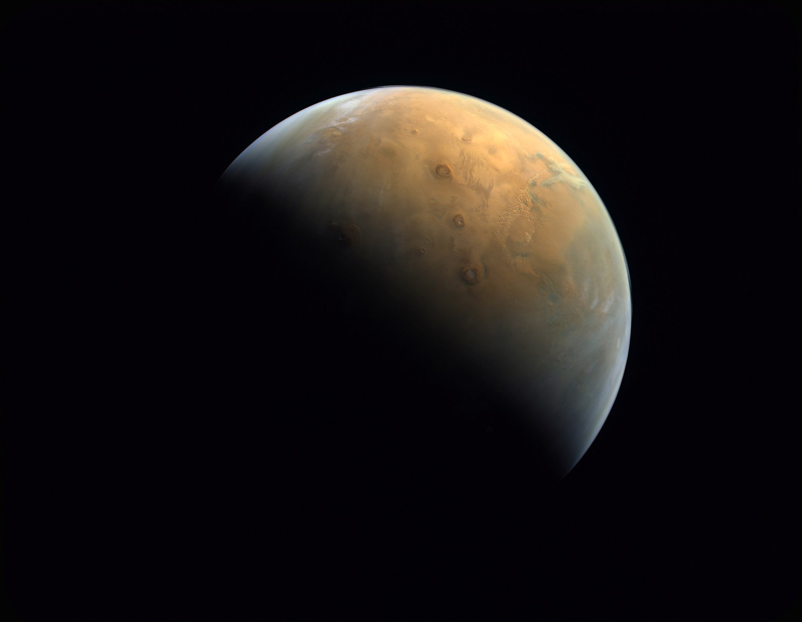

Where am I?
Welcome to SPACE-INTEL. A place of seeming simplicity buried complexities. This website illustrates a love for front-end web development and a interest in everything that is beyond our world. For some context, I (Max Kruger) created this site as a means to explore and learn better design philosophy whilst also challenging my own understandings of what makes good design. Not only this but it was a fun place for me to learn more about SPACE!
The Blog Hole
If you're wondering what you can do on this website, well there is a bit you can already look at and more coming!
For starters there is the Blog Hole. The Blog Hole is currently a part of this galaxy where we dive into what Data
Visualization is. This is the first Blog Post out of many that I will be writing throughout the second half of the year. My Second Blog Post will speak on a critical reflection of the UI and UX choices made on this website.
Designing Mars
This is the planet where I speak about the design choices, and overall building of the website. This is still in an extremely early phase and is still being developed weekly. Currently there is photos of the wireframes that I hand drew myself in order to start designing this website. There is also a Style Guide which speaks about other design choices made on the site such as the different contrasts, the colour choices, the simplistic design etc...

Data-Art Section
This is a placeholder for the future development of the site. /////////////////////////////////////////////////////////////////////////////////////////////////////////////////////////////////////////////THIS IS A FORMAT PLACEHOLDER/////////////////////////////////////////////////////////////////////////////////